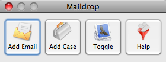

Button Bar
The primary uses of Maildrop are done via the Button bar.

- Add Email : Create a new Email Activity in Salesforce.com.
- Add Case : Create a new Case in Salesforce.com, using the email as a starting point.
- Mail/Entourage selection : Maildrop supports both Mail and Entourage, this button will show which application Maildrop is currently targeting. This will automatically toggle based on the active application (i.e. if you have Entourage as the forground application, this will automatically flip to Entourage). You can click this button to manually toggle between the 2.
- Opens the Maildrop help.
The ButtonBar will float above the Mail or Entourage window for easy access, but will move to the background if some other application is currently active, switching to make Mail or Entourage active again will bring the Buttonbar back to the front.